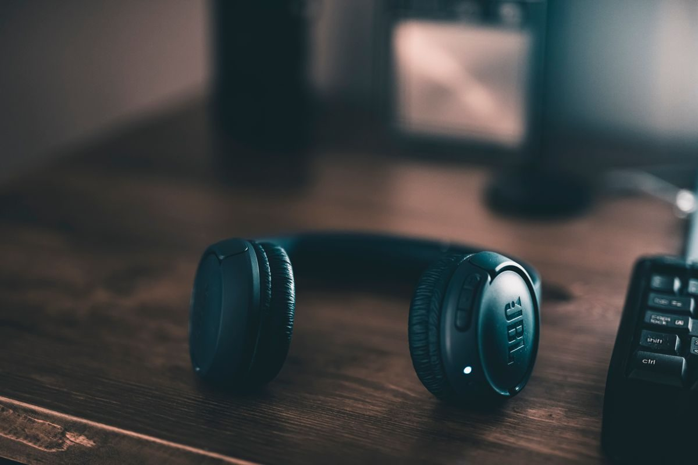
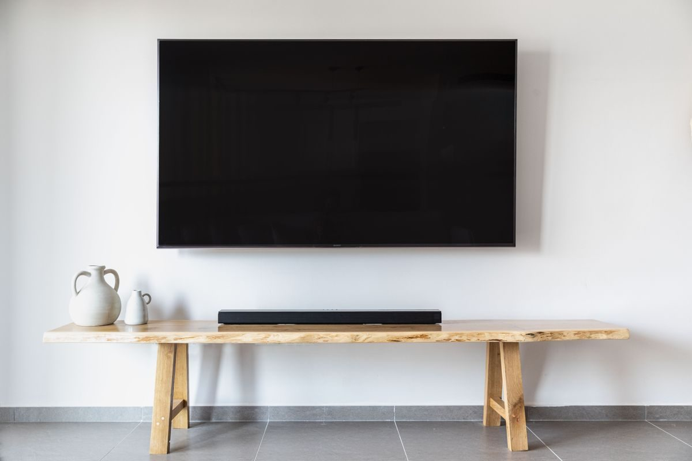

Auriculares y sonido
Auriculares inalámbricos, de diadema, altavoces y micrófonos. Qué características cambian de verdad cómo suena y cuáles solo cambian el precio.

Los mejores altavoces Bluetooth en calidad-precio
Los altavoces Bluetooth que mejor relación calidad-precio dan, con lo que hay que mirar antes: tamaño, resistencia al agua y batería real.
Leer la guía →
Los mejores auriculares de diadema en calidad-precio
Auriculares de diadema con cancelación de ruido: cuáles valen la pena y qué se nota de verdad al usarlos horas seguidas.
Leer la guía →
Los mejores auriculares inalámbricos en calidad-precio
Auriculares inalámbricos que compensan de verdad, y las cinco características que deciden si vas a estar contento con ellos.
Leer la guía →
Las mejores barras de sonido en calidad-precio
Qué barra de sonido comprar para volver a entender los diálogos de la tele, con las conexiones que importan y las que solo suben el precio.
Leer la guía →
Los mejores cascos gaming con micrófono
Qué casco gaming comprar para PC o consola: por qué el peso importa más que el sonido y por qué el 7.1 de la caja no es real.
Leer la guía →